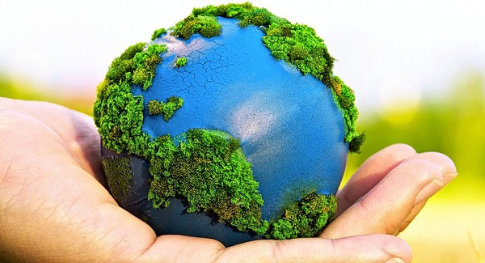

CONTAMINACIÓN DEL PLNAETA
CONTAMINACIÓN

-
Definición
Se muestra la definición
-
Tipos de contaminación
Se muestra los tipos de contaminación
-
Consecuencias de la contaminación
Muestra las consecuencias
-
Regla de las tres "R";
Muestra las reglas de las "R";
-
Medidas preventivas
Muestra medias para prevenir la contaminación
-
Contaminación en mi entorno
Muestra la contaminación en mi entorno



 2
2 6
6 9
9 11
11